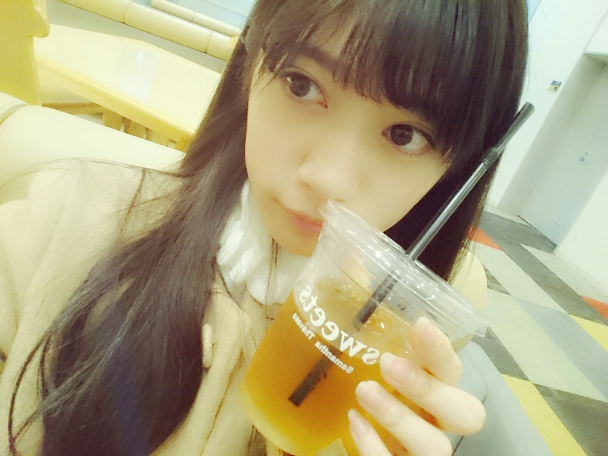
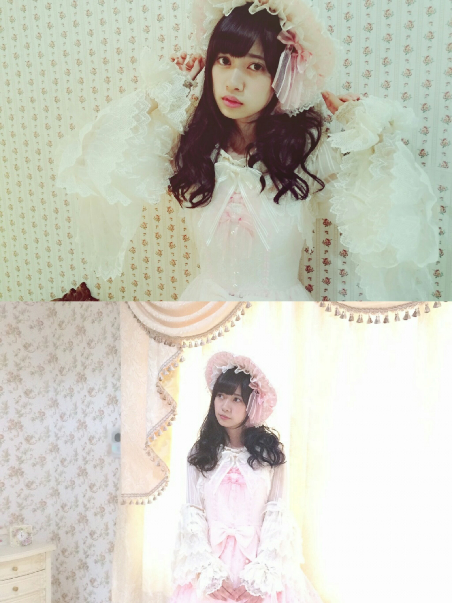

2015/1122Sunアルデンテアルデンテ握手会 だね。アルデンテ
よく聞かれる
最近嫉妬した事ないですか？
でも最近の中元さんブログにみりあたんとご飯に行きましたーっと書いてあったのを見て
あれ、私嫉妬してるぞ
この感情
ってなりました
かりんのブログにも中元さんとお食事って書いてありましたよね、、、
╭( ิ_ ิ )╮オコルデシカシ
( ˙-˙ )、、、なんてね
でもでも
カナさんブログにも
書いてありましたが
カナさんと夢の国行ったんだよ( ･´ｰ･｀)どやさ
この２人って意外だねって
メンバーやスタッフさんにも
言われました。笑
まず、私が先輩含めメンバーと遊ぶのってレアですよね
よく、１人○○して来ましたブログを書いてるので
そんなカナさんとの
夢の国は楽しかったです♫
正直話途切れて沈黙ばかりになりそうなんて考えてたんですが
共感できるお話とかが
沢山あって
並び時間も１時間近くあったけどずーっと喋ってましただからあっという間に感じました
凄く楽しかったです！
ジェットコースターに乗った時も
落ちる前に
カナさん
「らんぜいきててねーー」
テラダ
「はいーー」
うきゃーーーぁ。
でも、凄くすごーく寒かったです
冬ですねm(._.)m
次もまた遊びたいです
遊んで下さい！
次はカナさんオススメの
スイーツ店を紹介して欲しいです♫
カナさんペロリ
 テラダポーズです。
テラダポーズです。
手をピシッと揃え
口をポカーンと空ける
これがテラダポーズです
お試しあれm(._.)m
ちなみに、仲良くなると
その人の肩とかを軽く叩く癖があって
（カナさんに軽く肩ツッコミしちゃいました）
あとおしり触ったりとか
ちょっとボディータッチが
増えますがごめんなさい
の割に逆に仕返しで触られたりするとだいぶリアクションに困る上しばらく黙り込みますもしくはテンパります
なんか落ち着かないんです。
取り扱いには気をつけて
そんな今日のブログは
夢の国に行ったということで
夢の国関連のお話をしようかな
かりんが夢の国好きなのは
ブログ読んでると分かると思うのですが
いがいとテラダも負けてないですよ！
幼い頃はディズニー映画で育ってきてて
何事も
覚えるまで
リピートしたい派でした
ちなみに
オリバーのジョルジェットが出てくるワンシーンを
よく1人で演技してました
今思い出すと恥ずかしいm(._.)m
好きな作品と矢印には
好きなキャラ名を書いてます
《オリバーニューヨーク子猫ものがたり》
⇨ジョルジェット
《不思議の国のアリス》
⇨お花たち
歌うお花のシーンが好きでした
《おしゃれキャットマリー》
⇨マリーちゃん
《美女と野獣》
⇨ルミエール、ポット夫人、チップ、ベル
《ヘラクレス》
⇨ハデス様
《ブレイブ、リトル、トースター》
⇨みんな大好きm(._.)m
ブランキーの声が好きでした
ブレイブ共感してくれる方募集中です。
この辺は
もうビデオが擦れるんじゃ無いかっていうくらい
見た記憶があります
あと《ムーラン》
⇨ムーシュー
好きなキャラクターも
握手会などで
よく聞かれるので
書いときました:-)
かりんは夢の国のお供として2人でよく行きます
撮影：伊藤かりん
下の私
こんな笑ってるの珍しい
写真でこの笑顔は
珍しい、、、
1人でもたまに行きます
なんか現実的じゃないところが好きで、、、
1人ならではの
楽しみ方
お一人様のベテランが居たら教えてほしいm(._.)m
また、プリンセス系の映画を中心に見直したい

✄ - - - - - - - - - - - - - - - -
公式サイトの告知情報とかが細かく書かれてて
見やすくなりましたね！
大変有りがたい
ニッカンスポーツ・コム
「NEWSがとまらんぜ」
毎週金曜日配信
寺田蘭世が乃木坂46内や芸能界のニュースを貪欲にキャッチし、らんぜの独特な感覚でどんどん発信していきます！
貪欲？！
どんよくって
こんな漢字だったんですね
読めなくて
貪欲ってなんだろうと思い検索してしまいましたm(._.)m
✄ - - - - - - - - - - - - - - - -

そして、サマンサさんの展示会にお邪魔してきました！
人生初めての
展示会は
ドキドキしました！
サマンサさんは
中学生の頃
お誕生日プレゼントとして
家族にもらってから
ハマって
何個かBagも持ってますし
お財布とパスケースも
サマンサさんで
揃えてたので
展示会は
あれも可愛いこれも可愛いでなんだかワクワクしました:-)
ポッピポピ♫
お洋服も可愛くて
なんと一緒に行った
生駒さんとお揃いを
頼んじゃいました
届くのが待ち遠しいです。
お財布が結構お古に
なってしまってるので
そろそろ新しい物に変えたいな
サマンサさんにお邪魔しようかしら
✄ - - - - - - - - - - - - - - - -

✄ - - - - - - - - - - - - - - - -
乃木中見ちゃダメです。
多分嘘
あーでもなー。笑
握手会の事はまた次のブログに書きます
おやすみなさいです:-D
2015/11/22 18:12


コメント(866)
来週いくよい
らんぜーーーーーー☆〜（ゝ。∂）
早く会いたいよ〜(T-T )( T-T)ﾁｸｼｮｳ…
29日行くから待っててね〜！
お疲れ様でした
工事中らじらー楽しみに
今後も頑張って
-ドイツからのファンより
いまパシフィコなうだよ！
さっき、友達が宝塚入ったって話したよ＼(^^)／
29はいっぱいあるから、よろしくね！！
蘭世の勢いとまらんぜ！
フリーペーパー明日取りに行くよ！！！
ほんとかわいすぎだ、、、
来週の幕張での握手会遠征するよ！！( ∩︎ˇωˇ∩︎)
わたし誕生日なの！！テスト前だけど行っちゃう(´•̥ ̯ •̥`)♡
たのしみだよ久々だよ〜〜〜たくさんお話ししようね！
蘭世〜♪
嫉妬してるんだね(^^)
可愛いなぁ( ^ω^ )
ディズニー！
俺はトイストーリーが大好き！
笑ってる蘭世可愛い(o^^o)
来週は握手会行くので
めっちゃ楽しみです！
乃木中みるねー！
もう可愛すぎて気絶寸前…（）
テラダポーズやってみるね(^_^)/~~
レポとか見ててみんなうらやましい･･･
早く会いたい！！
蘭世ディズニー行ってきたんや、うらやましい！！
私もねー1月いく！！
楽しみだ
その前にライブある！！
2015年ともおさらばかあ
ラストスパート！がんばろうね！
ブログ楽しみにしてたよ！
俺も握手会では蘭世に夢の国に連れてってもらってます（笑）これからも頑張ってね！
今日パシフィコ行ったよ！
楽しかった！
来週も幕張メッセ行くからね！
これからもお仕事頑張ってね！
応援しています！
Disneyのお写真もしかして、いや絶対に
シンドバッドの冒険ですよね！！！(^○^)
私シンドバッドの冒険にでてくるチャンドゥ(トラ)がいちばん好きなんです！♡
蘭世ちゃんチャンドゥ知ってますか？？
つれてって！
ちなみに。
トイマニもすきだけどなんやかんや
パイレーツがすき
あつき
なんかどんどん可愛くなっていくなー！笑
がんばってね！
ブログ更新ありがとう！
こんにちは
こんばんは
KICKNと申します。
蘭世とごはんとか遊びに行きたい人です(^^)笑
このブログを読んでる時にたまたま嫉妬の権利を聞いているという…
テラダポーズ、今度の握手会でやってみようかと思います(^o^)/
夢の国には相当行けてないな(ｰｰ;)
蘭世ー今度は自分行ってくだされm(._.)m
ちなみにディズニー映画ではアラジンを小さい頃よく見てた記憶があります。しかも何回も何回も…
最近は見なくなったなー
蘭世の可愛い写真をありがとう！とかりんさんに伝えておいてくださいな(*^o^*)
では、これからも
蘭世の勢い、止まらんぜーー！！
今日の生写真もちょー可愛くてめっちゃ集めたww
名古屋行くから〜
いつもお疲れさま！
ひめたんに嫉妬‥(#^_^#)
可愛いね!!
うーん‥そう言われれば、いろいろなところで嫉妬心を抱いているって思う。
人間は感情の塊だからね(ﾟωﾟ)
かなりんとたくさんお話しできてよかったね(^_-)-☆
優しい先輩がたくさんいる(*･ω･)ﾉ
テラダポーズ＊＊＊withかなりん
蘭世だから感慨深い！！！
ボディータッチや肩タッチ♬
蘭世のそんな姿‥想像できないなぁ<(_ _)>
今日の乃木中 絶対に見るね！ 笑
２期生 イェーイ(○´∀｀○)＼
サマンサめっちゃかわいいよね！！
私もすきー！！
ディズニー行ったんだ！！
羨ましい！私も行きたい〜！！
またらんぜちゃんとディズニーのお話したい〜！
楽しみすぎる
らんたんの写真は、ホント綺麗です。画になりますなー
ブログ更新ありがとう◎
そして、握手会おつかれさま(^^)
ディズニーいいなぁ←
らんぜちゃんの好きなキャラクター意外とマニアックだ！わたしはプーさんに出てくるイーヨーが好きなんだ◎
フリーペーパーのオフショットかな？？可愛い（＠＾＾）
今、話したい誰かがいるの残ってた握手完売したね！おめでとう＼(^o^)／
次のシングルでまた会いに行くよ！
乃木中みるね◎おやすみなさい:-)
笑う写真も可愛い、もっとああいう写真見たい＼(^o^)／
今後も頑張って
ポピパッパパー歌ったことあいます？
-ドイツからのファンより
ぢらふ。のツレ氏がらんぜにどハマりしてるよー。
また握手会行きたいってさ。
3部しか行けなかったけど、今度からはもっといっぱい蘭世に会えるようにバイト頑張るよ〜
コメントする